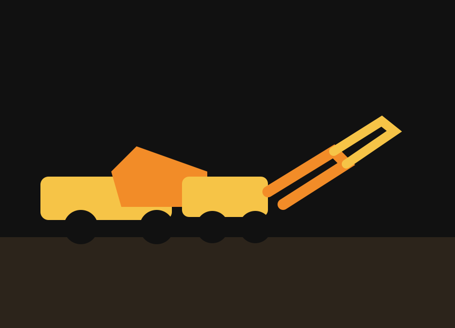

आमचे ध्येय
उद्योग, बांधकाम आणि ग्रामीण प्रकल्पांना योग्य वेळेत सक्षम वाहतूक व उत्खनन सेवा देणे.

तुषार बोबडे ट्रान्सपोर्ट अँड अर्थवर्क ही महाराष्ट्रातील बांधकाम, माइनिंग आणि जमीन विकास प्रकल्पांसाठी सेवा देणारी विश्वसनीय संस्था आहे. आम्ही मुरूम, वाळू, खारपण, बांधकाम साहित्य वाहतूक तसेच डंपर, JCB आणि पोखलँड सेवा उपलब्ध करून देतो.
प्रत्येक कामात वेळेची अचूकता, सुरक्षितता, मशीनची योग्य निवड आणि ग्राहकांच्या बजेटनुसार स्पष्ट दररचना ठेवणे हे आमचे प्रमुख वैशिष्ट्य आहे.
उद्योग, बांधकाम आणि ग्रामीण प्रकल्पांना योग्य वेळेत सक्षम वाहतूक व उत्खनन सेवा देणे.
अनुभवी चालक, प्रशिक्षित ऑपरेटर, नियमित देखभाल केलेली वाहने आणि तत्पर प्रतिसाद.
किलोमीटर बेसिस, करार पद्धती, साइटनुसार वाहन उपलब्धता आणि स्पष्ट कम्युनिकेशन.
कामाचा प्रकार, अंतर, वेळ आणि यंत्रसामग्री गरज यानुसार योग्य योजना तयार केली जाते.
डंपर, JCB, पोखलँड आणि इतर आवश्यक यंत्रणा कामाच्या स्वरूपानुसार तैनात केल्या जातात.
साइटवरील सुरक्षित हालचाल, प्रामाणिक व्यवहार आणि काम पूर्ण होईपर्यंत सतत संपर्क ठेवला जातो.